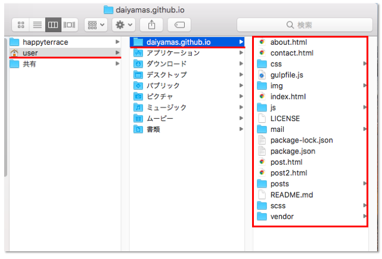
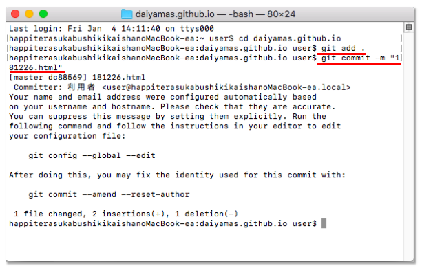
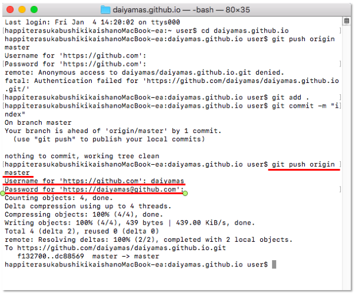

ローカルリポジトリをどこに配置する?
Blogの全ファイルはPaizaClpud上で管理、改廃を行なっています。「PaizaCloud上にローカルリポジトリを配置できるのか？」 を調べてみましたが、参考になる情報は見つけられませんでした。今回は一時的にMacbook Airのuser/内にローカルリポジトリ 「daiyamas.github.io」を作成しました。
$ git clone https://github.com/daiyamas/daiyamas.github.io.git
ファイルの改廃、新規作成等が発生した際は、PaizaCloud上から下記ディレクトリの該当箇所にファイルを上書き、追加してリモートリポジトリとの同期を行います。 
例えばBlog内の下記ファイルを変更した場合。
user/daiyamas.github.io/posts/181226.html
- 変更したファイルをPaizaCloud上から/user/daiyamas.github.io/上の該当箇所に移動する
- MacのターミナルでGitコマンドを入力してリモートリポジトリと同期する。
$ git add .
$ git commit -m “ovewrite 181226.html”

リモートリポジトリに変更の書き込みを忘れていたので、下記コマンドを入力。「username」と「パスワード」を入力して作業完了。
下記ページを仮アップしました。記事ページは各要素のCSSはひととおり設定済なので、これをベースに日報として記事作成を行っていきます。